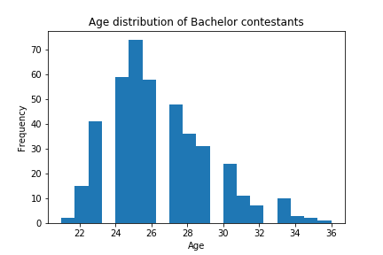

The Bachelor Nation has grown over the last 28 seasons. Chris Harrison has lead the nation through drama, heartbreak, but ultimately love. Each season, there is one bachelor (or bachelorette), who has to pick a partner out of 30 people - over the course of 10 weeks. However, as I have grown older, I have faced the stark reality that these are my peers on the show, not just these imaginary older women - which is what I felt like when I was younger. So, for this essay, I wanted to see if there was any correlation involving age and other varibles. The data we are looking at is from Kaggle. Specifically, this datatset, the bachlor contestants. It goes over 16 seasons.
To begin reading the data, I wanted to understand the range of ages that the contestants were. In python, I coded this to calculate the min/max of the dataset.
max_age = max(df['Age'].values)
min_age = min(df['Age'])
That printed out the simple answer =
Max age: 36.0; Min age: 21.0
The next step is to plot this on a graph to visually see the age data. In this histogram, also plotted in Python, displays the the age frequency of Bachelor Contesetants.  As you can see here, the most common age is 25. The outliers in the data are the min/max, and there are some ages unaccounted for. This shows that the data is (NAN)The average age of the girls who stayed the longest, is 26 years old.
heat map discription While not directly states in this visualization,
recap
Thank you for reading my response! If you wish to see my other pages, click here!